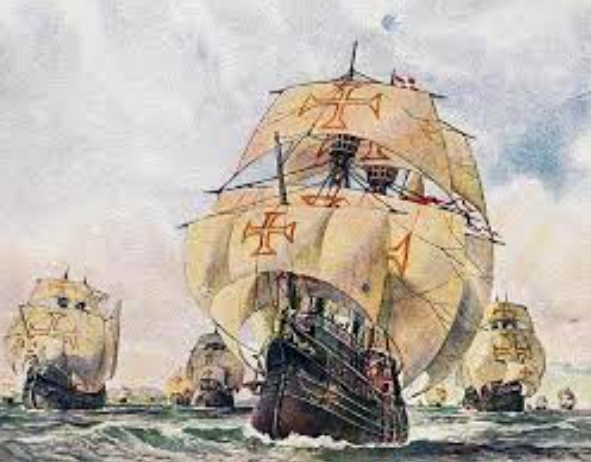
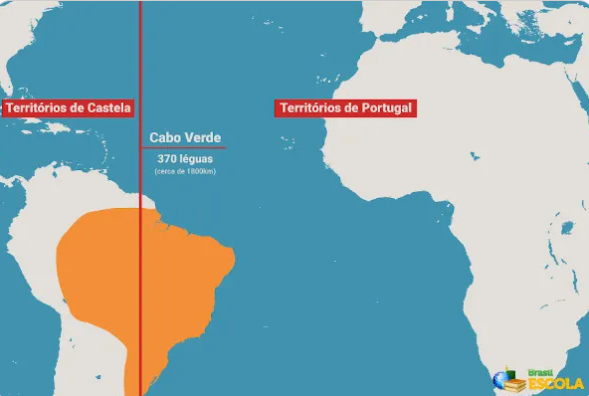

O Descobrimento do Brasil
O Brasil foi "descoberto" em 1500 por Pedro Álvares Cabral, contudo, a expedição que proporcionou aos portugueses chegarem a Terra de Vera Cruz ocorreu devido a eventos precedentes que são de suma importancia para compreendermos o contexto histórico no qual isso ocorreu. A síntese que aborda tais eventos segue adiante:
As Cruzadas (sec. XI - XIII)
No século XI, a expansão do mundo islâmico estabeleceu o domínio da região da Palestina e consequentemente Jerusalém, terra sagrada para o cristianismo. Inicialmente, o controle territorial exercido pelos árabes ainda permitiu que a cidade sagrada fosse visitada por vários cristãos que peregrinavam em direção ao local. Contudo, nos fins desse mesmo século, a dominação realizada pelos turcos impediu que a localidade continuasse a ser visitada pelos cristãos.
Nessa mesma época, a Europa feudal vivia um período de paz, depois de longos séculos de guerras bárbaras. Essa paz e a prosperidade reinante provocaram um aumento na população. Com muitas pessoas e pouca terra a marginalidade cresceu muito. O papa Urbano II, percebendo o aumento populacional e a proibição dos cristãos de adentrar Jerusalém, cidade santa para o cristianismo, decidiu organizar expedições religiosas e militares para lutar contra os islâmicos e reconquistar o acesso à Terra Santa. O cavaleiro que aceitasse participar dessas expedições ganharia a indulgência, ou seja, o perdão de seus pecados.
-
Ao todo houveram 9 cruzadas
-
Eram chamadas de cruzadas por conta do símbolo da cruz vermelha utilizada pelos
soldados
-
As Cruzadas foram importantes para a criação de um fluxo comercial que permitiu a
introdução de várias mercadorias orientais no cotidiano da Europa. Além disso, o contato
com os saberes do mundo bizantino e árabe foi importantíssimo para o progresso
intelectual necessário para o desenvolvimento das posteriores grandes navegações
As Grandes Navegações (sec. XV)
As grandes navehações foram navegações oceânicas realizadas ao longo do século XV que permitiram a exploração do Oceano Atlântico. Foram possíveis graças à acumulação de conhecimento náutico e à chegada de novas tecnologias que facilitaram a navegação
Portugal reunia condições políticas, econômicas e geográficas favoráveis e até mesmo a sociedade portuguesa abraçou a exploração marítima, sendo eles os pioneiros Porém, foram os espanhóis quem enviaram a primeira expedição para a América
Descobrimento da América (sec. 1492)
Expedição espanhola liderada por Cristóvão Colombo. Essa expedição não foi idealizada com a proposta de chegar-se a terras desconhecidas, mas sim ao continente asiático. A chegada dos espanhóis à América deu início ao processo de colonização do continente americano e também à disputa por terras com os portugueses
Tratado de Tordesilhas
Portugal também desejava ter o domínio de parte da América. Para evitar que portugueses e espanhóis entrassem em guerra, o Papa Alexandre VI interveio e assinou a Bula Inter Coetera, que estabelecia uma linha imaginária, inicialmente, a 100 léguas das ilhas de Cabo Verde, dividindo as conquistas entre os reinos ibéricos. O Tratado de Tordesilhas foi um acordo firmado entre Portugal e Espanha, em 1494, no intuito de demarcar os limites de exploração dos dois reinos no Atlântico Sul. O Tratado de Tordesilhas foi extinto quando a Espanha anexou Portugal à sua monarquia, instituindo a União Ibérica (1580-1640). Como os dois reinos estavam unidos, não fazia mais sentido haver uma linha dividindo suas posses. Os portugueses puderam, então, organizar expedições para o interior do Brasil no intuito de encontrar metais preciosos
Descobrimento do Brasil (1500)
Descobrimento do Brasil foi feito por Pedro Alvares Cabral que desembarcou na região que hoje é Porto Seguro na Bahia. A viagem de Cabral foi Motivada pela expansão marítima europeia e grandes navegações. Pero Vaz de Caminha foi o escrivão que fez parte da expedição de Pedro Álvares Cabral e descreveu em uma carta as primeiras impressões sobre o Brasil. A embarcação chegou primeiro ao Nordeste e Pero Vaz de Caminha chamou o Brasil inicialmente de Terra de Vera Cruz. Naquela época os indios já habitavam o Brasil antes da chegada dos portugueses.